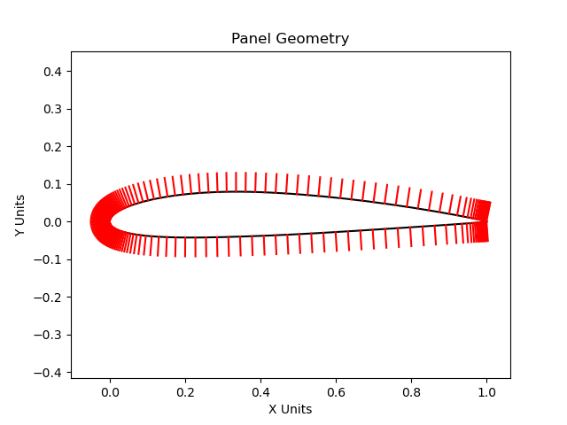
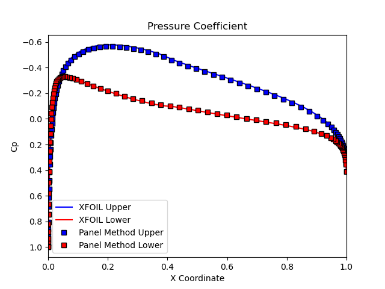
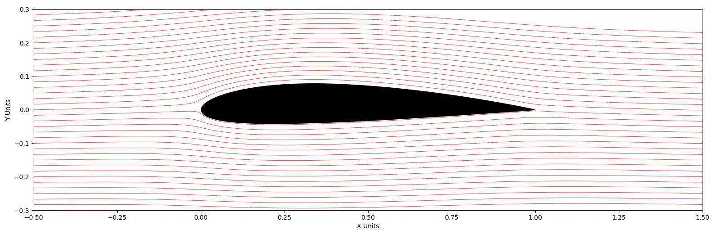
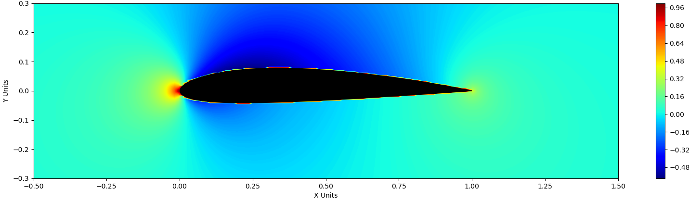

Python · Potential Flow
Source and Vortex Panel-Method Solver
- Objective
- Implement a source and vortex panel method from potential-flow theory to predict the pressure distribution and lift on an airfoil, then verify the solver against an established reference.
- Tools
- Python (NumPy, Matplotlib).
- Role
- Implemented the solver, ran the cases, and carried out the verification.
- Result
- Pressure distribution on a NACA 2412 matched XFOIL to within ~5%. Lift coefficient agreed across three independent methods: vortex panel 0.251, Kutta–Joukowski 0.253, XFOIL 0.256.
Problem
Panel methods are how you get fast pressure and lift estimates on an airfoil before committing to full CFD. They solve potential flow around the real surface geometry, which makes them far cheaper than a Navier-Stokes solve while still capturing the pressure distribution that sets lift.
The goal here was to build one from the governing equations rather than drive an existing tool, and then check the result against a trusted reference. Working through the implementation means understanding what a commercial solver is doing internally instead of treating it as a black box, and verifying the output is what turns a working script into a result worth trusting. The test case is a NACA 2412 airfoil.
Method
The method assumes potential flow: steady, incompressible, inviscid, and irrotational. Under those assumptions the velocity field is the gradient of a scalar potential, and the flow around the airfoil can be built by superposing elementary solutions placed on the surface.
The airfoil surface is discretized into straight-line panels using coordinates from the UIUC airfoil database, with a control point at the center of each panel. Source panels represent the non-lifting thickness effect, and vortex panels introduce circulation, which is what produces lift. Enforcing zero normal velocity at every control point gives a linear system for the unknown panel strengths, which is solved directly. For the vortex formulation, one equation is replaced by the Kutta condition, forcing the flow to leave the trailing edge smoothly and closing the circulation problem.
Once the panel strengths are known, the tangential velocity at each control point gives the pressure coefficient, and integrating pressure over the surface gives the normal and axial force coefficients, which resolve into lift.
The solver was written in Python, adapting the numerical formulation from JoshTheEngineer's open-source (MIT-licensed) panel-method work, and then verified independently against XFOIL and against the Kutta–Joukowski theorem.

Results
The pressure distribution from the vortex panel method matches XFOIL closely across both surfaces, agreeing to within roughly 5%. Since XFOIL is an independently developed and widely used tool, that agreement is evidence the implementation is correct rather than merely self-consistent.

Lift was then checked three ways. The panel method integrates surface pressure to get CL = 0.251. Applying the Kutta–Joukowski theorem to the total circulation from the same solution gives 0.253. XFOIL reports 0.256. Two independent routes through the solver's own output and one external tool all land within about 2% of each other, which is a stronger check than any single comparison.
The result is also physically sensible on its own terms. All three values are taken at zero angle of attack, where a cambered airfoil like the NACA 2412 still generates lift, so a nonzero CL is the expected outcome. A symmetric airfoil under the same conditions would produce none.
| Method | CL |
|---|---|
| Vortex panel method | 0.251 |
| Kutta–Joukowski | 0.253 |
| XFOIL | 0.256 |
All values at zero angle of attack.
The solver also produces the full flow field, not just surface quantities. Streamlines and the pressure field show the expected behavior: flow accelerating over the upper surface with the corresponding low-pressure region, and stagnation near the leading edge.


Conclusion
A panel-method solver built from potential-flow theory reproduces an established reference to within a few percent, verified two ways: pressure distribution against XFOIL, and lift coefficient against both XFOIL and the Kutta–Joukowski theorem. Agreement across independent formulations is what makes the result credible rather than just plausible.
The method is inviscid by construction, so it cannot predict viscous drag, boundary-layer development, flow separation, or stall. It is valid at low angle of attack and small camber, and accuracy degrades as those assumptions break down. The comparison against XFOIL is also a comparison against another potential-flow-based tool rather than against experiment, so it verifies the implementation rather than validating the physics. Validation would require wind-tunnel data or a viscous solver.